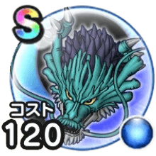

じげんりゅう
ドラクエモンスターズイベントこころ最大コスト+4スキルの斬撃・体技ダメージ+5%ヒャド属性ダメージ+7%ドルマ属性ダメージ+7%呪い耐性+10%みかわし率+3% / 8.0点
くわしい特徴
【ランク特殊効果】 こころ最大コスト+4スキルの斬撃・体技ダメージ+5%ヒャド属性ブレスダメージ+5%ドルマ属性ブレスダメージ+3%ヒャド属性ダメージ+7%ドルマ属性ダメージ+7%呪い耐性+10%みかわし率+3%こころ最大コスト+4スキルの斬撃・体技ダメージ+5%ヒャド属性ダメージ+7%ドルマ属性ダメージ+7%呪い耐性+10%みかわし率+3%